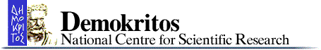
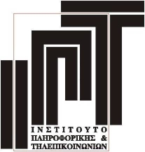
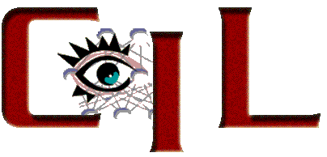
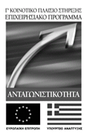
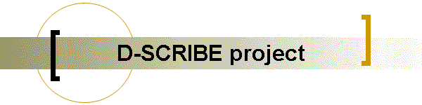

Институт
по математика и информатика - БАН
Департамент
“Информатика” - НБУ
Семинар
Дигитализация
на научното наследство
25.
05. 2005 г., 14:15 часа, ИМИ -
мултимедийна
зала
Разпознаване на думи в сканирани стари
документи
Николай Киров, Андрей Андреев
Резултати от работа по
програма “Мария
Кюри” на Европейската комисия – проект “Дигитализация на културно и
научно наследство в България”
Ε.Κ.Ε.Φ.Ε.
"ΔΗΜΟΚΡΙΤΟΣ"


Institute
of
Informatics Telecommunications


D-SCRIBE:
A System for Digitization and Processing of Greek Manuscripts
Stavros J. Perantonis, Senior
Researcher, Head of CIL
Vassilios Gatos
Ioannis Pratikakis
Tomas Konidaris
Постановка на задачата
Търсене в
текстови
документи
Стандартна технология:
- сканиране на текста;
- разпознаване и произвеждане на ASCII или
Unicode файл;
- търсене в текстов файл.
Трудности при прилагане на тази технология за стари документи:
- сканиране - лошо състояние на документа
- пожълтяла хартия
- избледняло мастило
- зацапвания и допълнителни бележки върху текста
- разпознаване -
- наличие на шум
- трудности при сегментирането на символите
- наличие на букви, които не са от съвременната
азбука
- остарели думи, които ги няма в съвременен
речник
- ръкописи
Друг подход за търсене в стари документи:
- сканиране в сивата скала (gray-scale)
- трансформация на изображението за получаване на
качествено
черно-бяло изображение
- сегментиране на думите
- търсене на дума, поредица от думи или части от
думи в
черно-бялото
изображение
Хаусдорфова метрика и разпознаване на думи
(pdf).